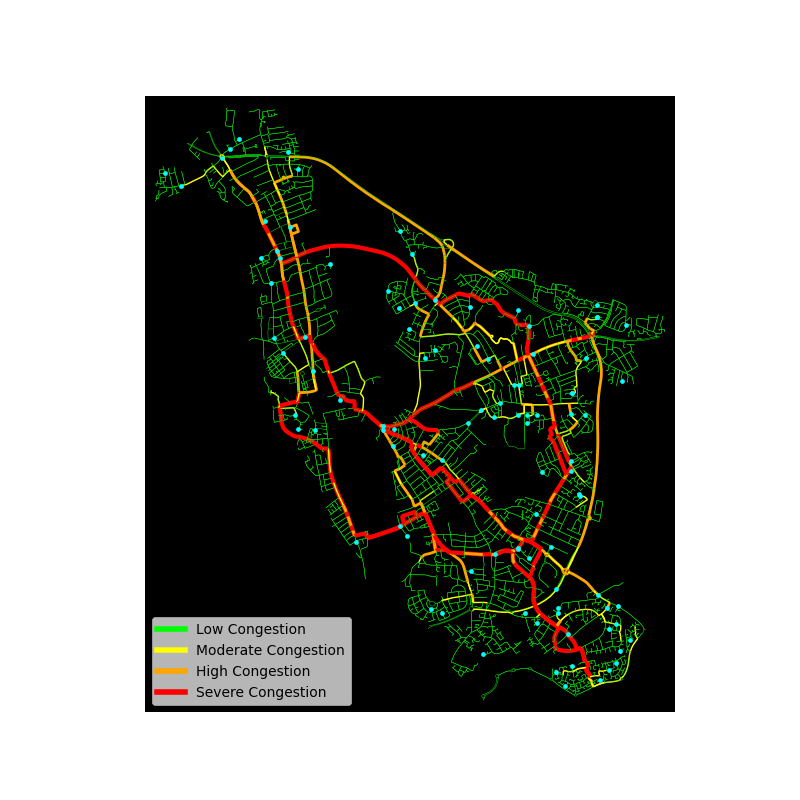

Featured Research Project

Independent Research Project
Neural Traffic Routing and Congestion Optimisation System
A simulation of congestion-aware routing on Oxford's real road network, comparing Dijkstra's algorithm with A*, measuring where congestion builds up as traffic grows, and testing a neural network written from first principles to predict congestion.
- Independent research report (41 pages, revised November 2026)
- Oxford road network from OpenStreetMap, modelled with OSMnx and NetworkX
- Dijkstra vs A* comparison, with an analysis of why A* gave no speed-up
- Congestion-aware re-routing, simulated with up to 5,000 vehicles
- The busiest road segment carried 11–13% of all journeys
- Feed-forward neural network implemented from scratch in NumPy, with a diagnosis of why it failed to train
Research Interests
Machine Learning
Graph Algorithms
Network Science
Artificial Intelligence
Optimisation
Probabilistic Modelling
Selected Projects
Traffic Routing & Congestion Optimisation
Adaptive routing system using graph optimisation, OSMnx, NetworkX and neural networks.
View ProjectBayesian ICU Prediction
Probabilistic modelling of ICU admission risk using Bayesian inference.
View ProjectDepression Survey Prediction
Machine-learning classification and preprocessing pipeline using survey data.
View Project
Eye To Morse Code
Real-time computer vision communication system that converts eye-blink patterns into Morse code using OpenCV and machine learning techniques.
View Project